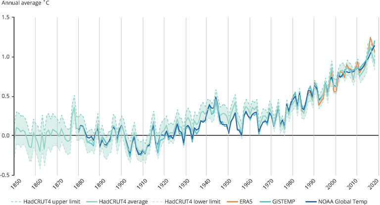
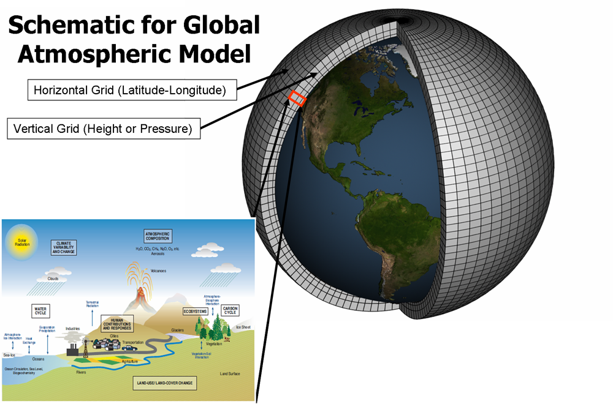
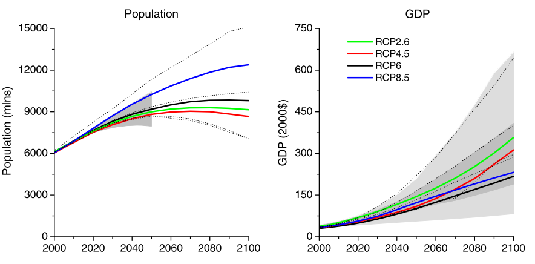
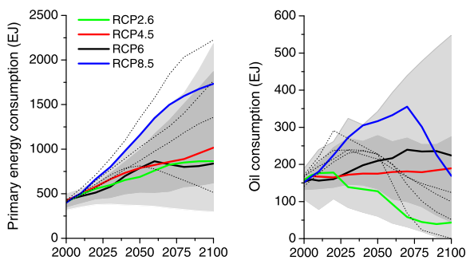
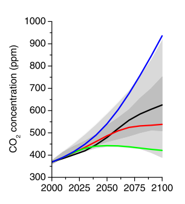
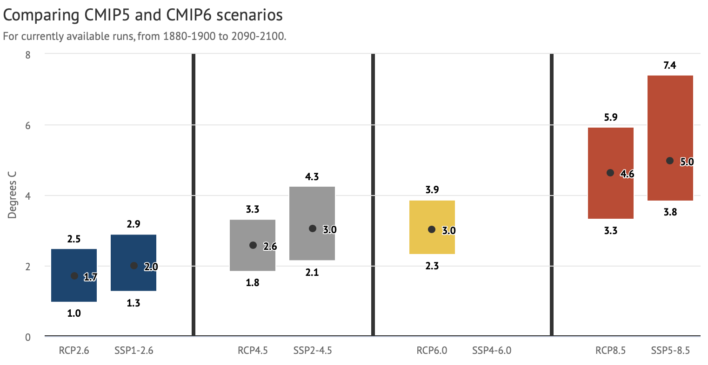
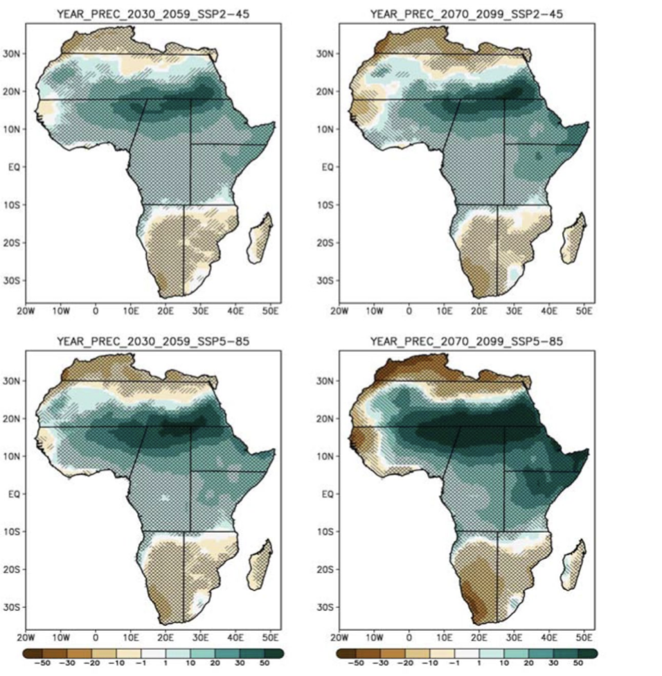

In this lecture we will answer the question: “How do we predict future change in climate?” We will discuss the use of climate models to predict future conditions including the kind of scenarios they are driven by and how they can inform risk management.
Most of us check the weather forecast on a daily basis, but not many of us look at a forecast of climate. There is often a lot of confusion between the two concepts. Therefore, it is important to understand what they mean. In short, we can say:
“Climate is what you expect, weather is what you get.”
Or in more scientific terms, climate is the average of daily weather over a period of around 30 years. Thus, although weather changes from day to day, the climate in a certain location should be fixed. If you plot a time series of temperature over time, we would expect it to wiggle from year to year but to have no long-term trend. However, if we look at the global average temperature over time (since 1850), which is shown in Figure 12.2.1, we see that this is not the case. We can clearly see that the climate is changing over time.
The main cause of the increase in temperature, and hence shift in climate, is the anthropogenic carbon dioxide emissions we put into the atmosphere, which cause the climate to change and directly affects the key climate variables such as temperature, precipitation and wind speed. More information can be found here. We will mainly focus on two aspects: how we model the future climate and how these model projections inform us on future climate risk.

Figure 12.2.1: The evolution of global mean surface temperature between 1850 and present. The different colours indicate different data sources (European Environmental Agence 2020)
To model how the climate might change in the future, we use so-called General Circulation Models (GCMs). GCMs are numerical (mathematical) models that represent physical, biological and chemical processes in the atmosphere, ocean, cryosphere and land surface. Given the complexity of all equations that are in a GCM, they must be solved numerically, which means that instead of providing exact solutions at every exact location, the results represent averages over regions and time. The level of detail used depends on the model resolution and the time step used.
A climate model divides up the Earth into a series of grid cells around the Earth, which are stacked into different layers (layers in ocean and atmosphere) (Figure 12.2.2). Most climate models have a spatial resolution of around 100km and solve the equations every hour or day. However, over the years, climate models have become much more detailed: the first models in 1990 had a 500km resolution, whereas the newest models have resolutions below 100km.
The main inputs into GCMs are the external factors that change the amount of the sun’s energy that is observed by the Earth and is trapped in the atmosphere (see more information here). The main anthropogenic external forcings are greenhouse gases (carbon dioxide, methane, nitrous oxides), which we have good records of, that help us test whether the GCM can reproduce the observed temperature trend. This step is essential before we can use a GCM to project into the future.

Figure 12.2.2: A schematic representation of a global climate model with the horizontal and vertical grids that are used to simulate the climate, land and ocean processes (GFDL, n.d.)
In order to predict how the future climate might look, we need scenarios of external forcing that we can feed into the climate model. To do this, scientists have developed a number of Representative Concentration Pathways (RCPs) which provide plausible descriptions of the future, based on socio-economic scenarios of how global society grows and develops. These RCPs are based on various scenarios of a range of variables including socio-economic change, technological change, energy and land use, and emissions of greenhouse gases and air pollutants (Vuuren et al. 2011). The main RCP scenarios used are RCP2.6, RCP4.5, RCP6.0 and RCP8.5, with the number indicating the total amount of carbon dioxide (CO2) emissions in the atmosphere in 2100 (in Giga tonnes).
In Figures 12.2.3-5, the changes in population, gross domestic product, primary energy consumption, oil consumption, and the resulting CO2 concentrations in the atmosphere are shown. As can be seen, RCP2.6 is a very ambitious scenario with moderate population growth, continuous economic growth, low energy consumption and very low oil consumption, resulting in a strongly decarbonized economy with low CO2 concentrations. On the other hand, RCP8.5 covers high population growth, moderate GDP growth, large and primarily fossil-fuel dependent energy consumption, resulting in very high CO2 concentrations.
These scenarios help us to explore alternative futures, including the associated uncertainty in how the climate might change.

Figure 12.2.3: The population and gross domestic product trajectory per RCP scenario (Vuuren et al. 2011)

Figure 12.2.4: The primary energy and oil consumption trajectories per RCP scenario (Vuuren et al. 2011)

Figure 12.2.5: The carbon dioxide trajectories per RCP scenario (Vuuren et al. 2011)
The various RCP scenarios can be used to force a climate model and predict how the climate might change in the future. Across the world, many climate models have been developed, which are all based on slightly different model specifications.
It is often hard to justify why one model is better than the other. Instead, we use an ensemble of climate models to project multiple realisations of the future climate based on the results of the individual climate models. For instance, in the most recent ‘Coupled Model Intercomparison Project Phase 6’ (CMIP6) project, the climate model ensemble that forms the basis for the IPCC report, includes climate models from 49 different modelling groups (Eyring et al. 2016).
In Figure 12.2.6, the global mean temperature warming for 2100 compared to pre-industrial (1880-1900) is shown for both the CMIP5 ensemble and the CMIP6 ensemble under various RCPs. A number of observations can be made. First, for RCP2.6, future warming is around 2°C in the CMIP6 ensemble, whereas for RCP8.5 the warming is 5°C. Second, the CMIP6 models project a larger warming than CMIP5, which is mainly due to the improved representations of various physical processes in the models (for instance, clouds and aerosols). Third, the spread between the models can be quite large. For instance, for the RCP8.5 scenario, the lowest CMIP6 model projects 3.8°C of warming, whereas the highest CMIP6 model projects 7.4°C of warming.

Figure 12.2.6: Prediction of changes in global mean surface temperature for the different climate scenarios. The range indicates the spread in model results, with the dot the median value and the range the smallest and largest model result (CarbonBrief 2019)
From the previous section, one takeaway was that the spread across models can be large. Another important point is that the climate might change differently in varying locations and over time. Figure 12.2.7 shows the expected change in precipitation over Africa for two scenarios (RCP4.5 top, RCP8.5 bottom) and two time slices (2030-2059 left, 2070-2099 right) (Almazroui et al. 2020). In all figures, a clear geographical difference can be seen. The North and South of Africa will experience a decrease in precipitation, whereas the Sahara and central parts of Africa will experience an increase in precipitation. The regional effect becomes stronger with a larger warming (RCP8.5 vs RCP4.5), illustrating that an increase in climate change will increase the geographical disparities in expected changes. Moreover, the time is also important to consider here. For RCP4.5, the 2070-2099 shows slightly higher changes than the 2030-2059 time slice, but results do not differ much. In contrast, for the RCP8.5 scenario, a much stronger signal is evident than in the 2030-2059 time slice. In addition, the two scenarios also illustrate the uncertainty in the projections. For the RCP4.5 scenario, some areas of Africa (Côte D’Ivoire, Ghana) see a mild increase in precipitation, whereas for RCP8.5 they will experience a decrease.
This all shows that, for risk analysis purposes, we need to evaluate the regional changes under multiple climate scenarios and models to understand the range of plausible futures that our infrastructure system might face.

Figure 12.2.7: Precipitation changes over the African continent for two time slices (2030-2059 and 2070-2099) and two climate and socio-economic scenarios (RCP4.5 and RCP8.5, and SSP2 and SSP5) (Almazroui et al. 2020)
In this lecture we have looked at how the climate is changing globally. We described how we make use of climate models and projections to predict how the climate might look in the future. The climate might change differently in different regions, making it important to look at regional changes.